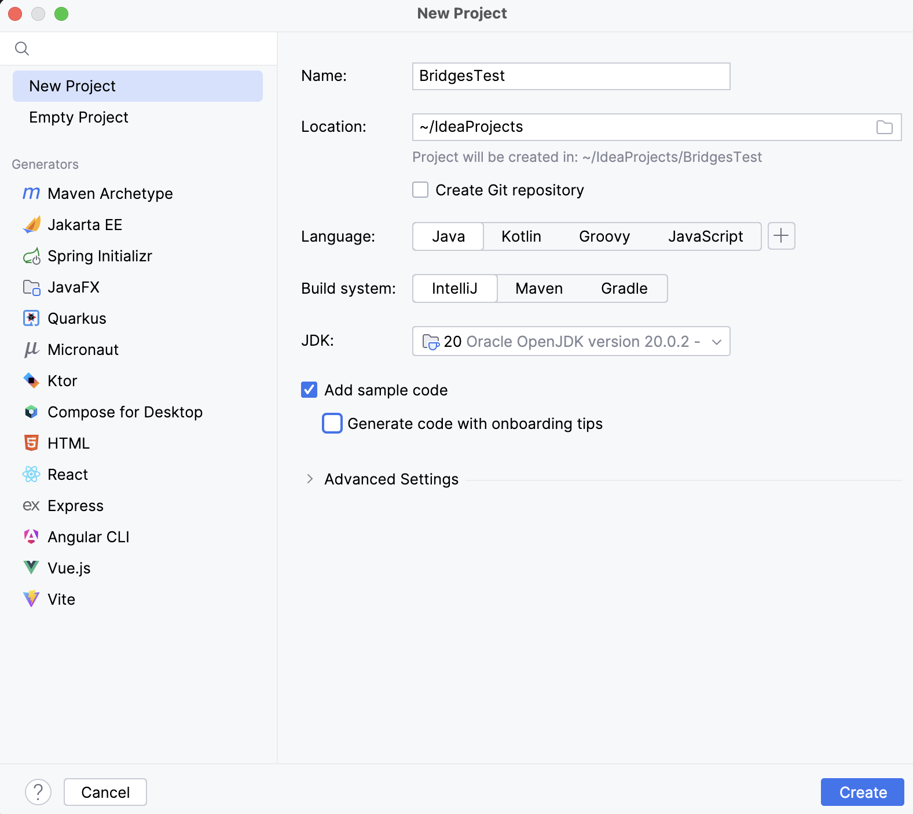
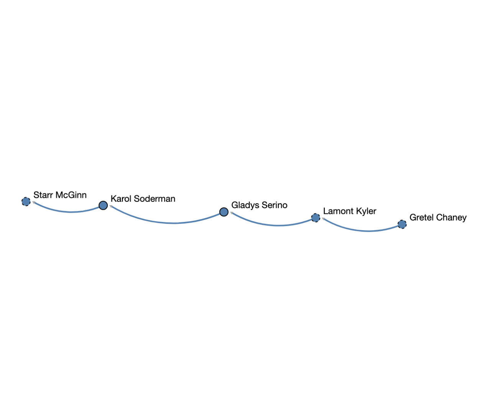

Step 1: Install IntelliJ IDE
- If you do not have IntelliJ
installed, download it from the
IntelliJ IDEA site and install it on your computer.
- IntelliJ comes with Java JDK 1.8, or you can configure it
to point to your Java installation.
- Open IntelliJ application after installation
|
Step 2: Create Bridges Account
- Visit the Bridges
main page
and create an account by clicking the
login button on the top navigation bar. Click "Sign Up!" near the bottom of the new window.
- Please ensure that
your user id is devoid of spaces, as it will be
used as part of the web link for your projects.
- After creating your account, click
on the profile tab in the uppper-right corner. In this window, you will see your account details and
API Key; you will need this API key later in the tutorial (as well as in every BRIDGES program
you write).
- NOTE: Make sure to remember
your password. There is no password recovery option,
and you can only have one account per email address.
|
Step 3: Create a new project
- Navigate to File -> New -> Project.
- In the next window, name your project and set its path. Make sure your project is using Java and 'Add Sample Code' is selected.
- Press 'Create'
|

|
Step 3: Import the Jar File into project
- Download the latest Bridges.jar file from
Bridges home page and save it somewhere convenient
on your drive.
- In IntelliJ, right click on your new project in the explorer window and select
Open Module Settings. Select Modules which will
show all the modules/Jars currently loaded.
- Open the dependencies tab near the top of the page. Then, click on the + icon.
- Jars or Directories
- This will open your systems file explorer. Navigate to the Bridges Jar file you downloaded earlier and click open.
- You should now see the BRIDGES Jar file as part of the
project. Hit Ok to get rid of the window.
|


|
Step 4: Create, Build, Execute a BRIDGES Java Program
- Go to this
BRIDGES Tutorial and copy/paste the Java tutorial program into
the main java file. Make sure the file and class name match!
- Initialize the bridges object with an assignment number (it can be any num), and your user ID and API key
you generated at the start of the tutorial.
- Run the program by hitting the Run button (Triangle icon) in the upper-right corner.
- You will see a link printed on the console. Use that to visualize the
output as seen in the image.
|

|